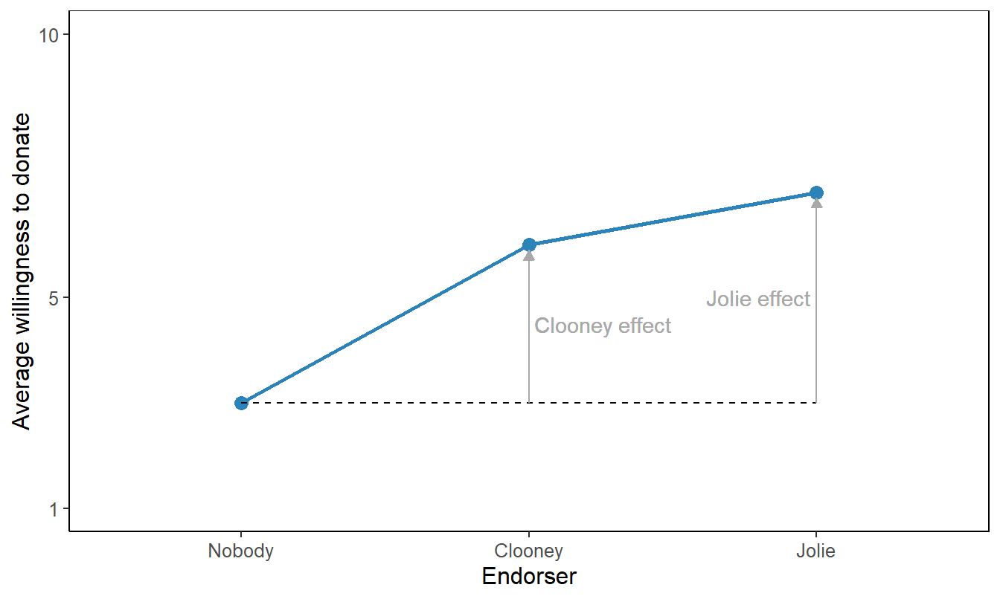
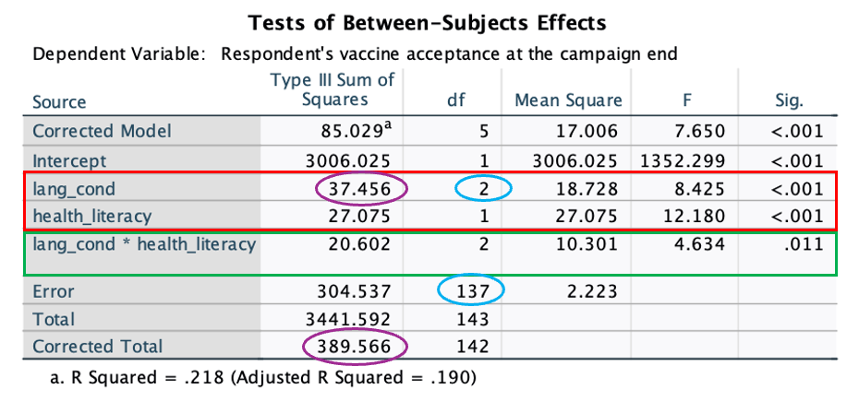
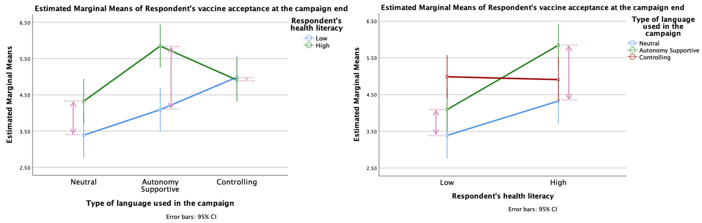
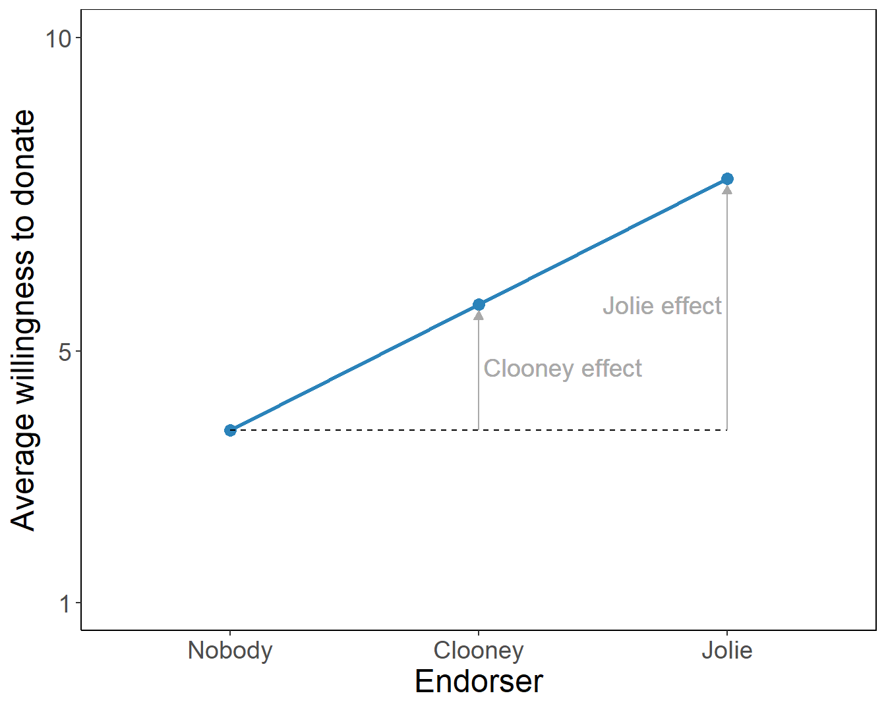
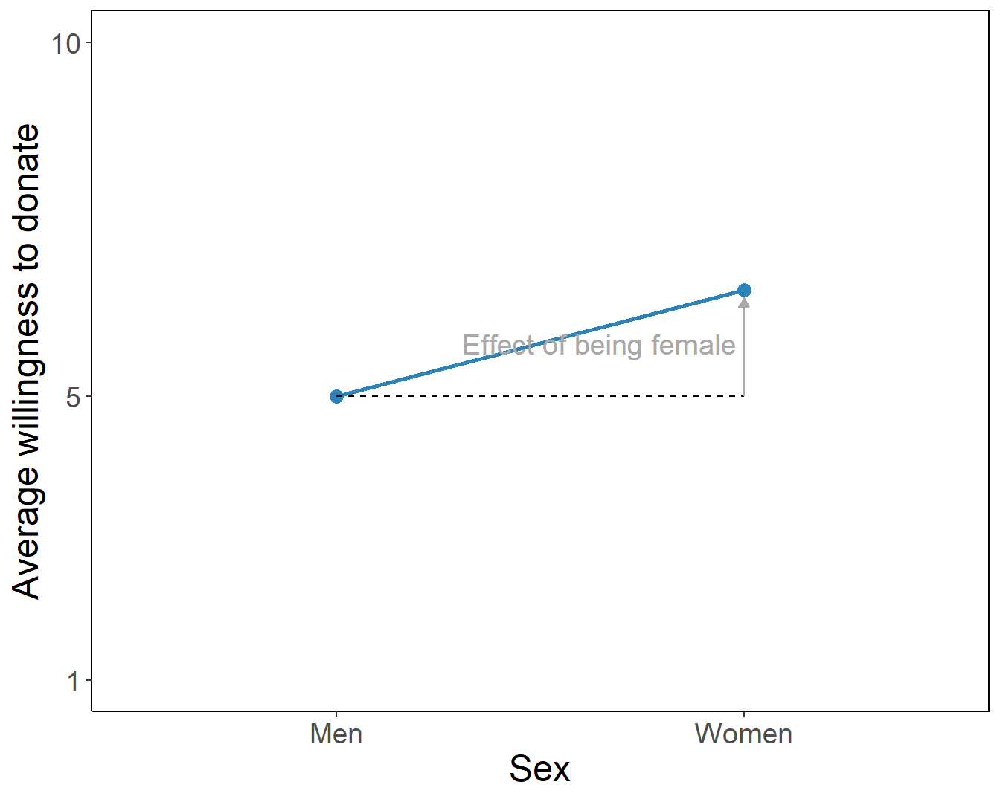
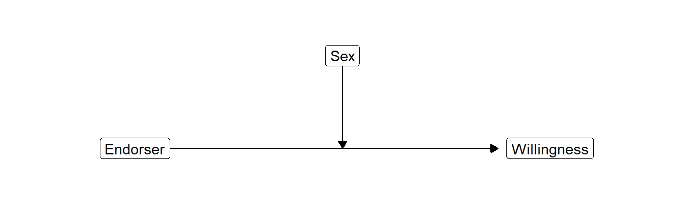
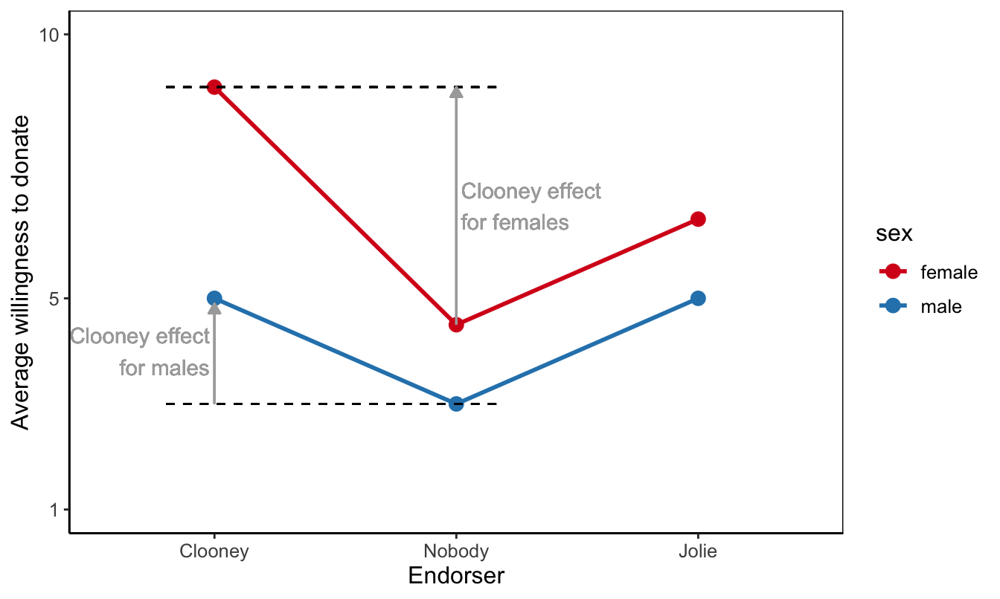
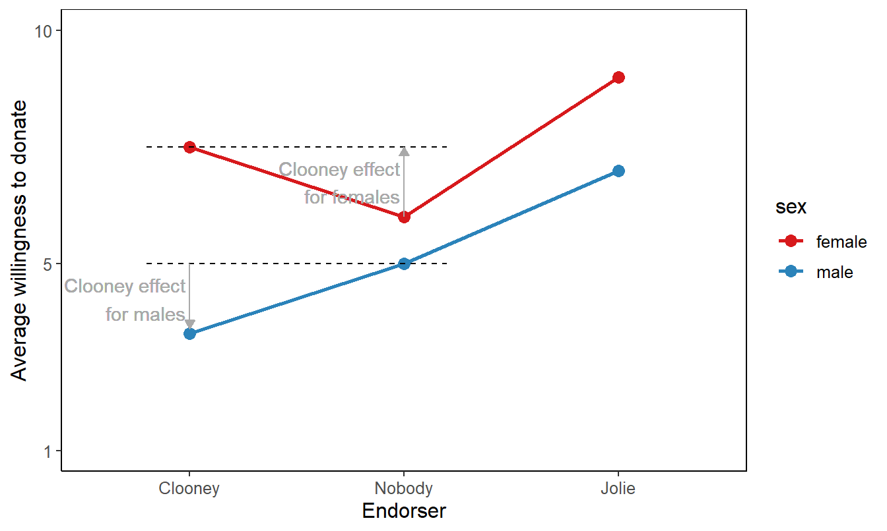
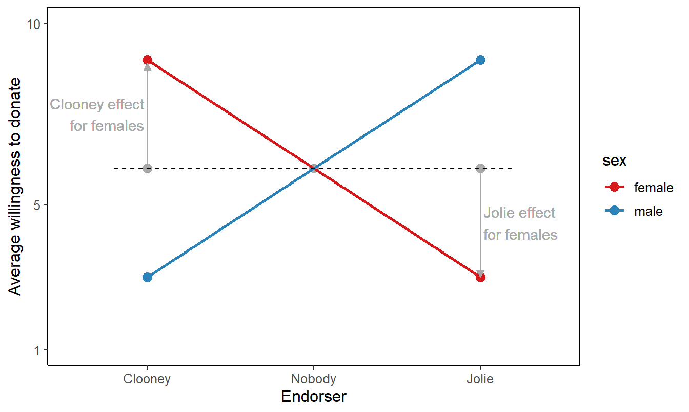
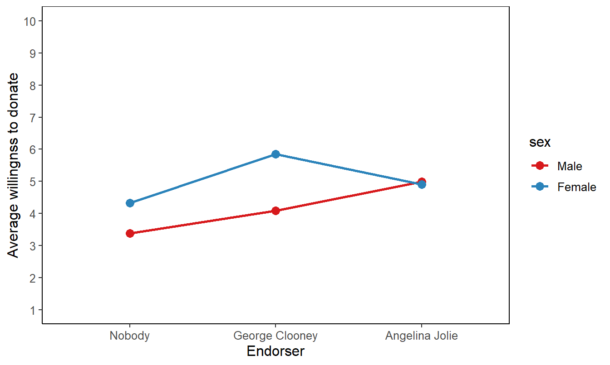

5 Moderation with Analysis of Variance (ANOVA)
Key concepts: eta-squared, between-groups variance, within-groups variance, F test on analysis of variance model, pairwise comparisons, post-hoc tests, one-way analysis of variance, two-way analysis of variance, balanced design, main effects, moderation, interaction effect.
Watch this micro lecture on moderation with analysis of variance for an overview of the chapter.
Summary
How do we test mean differences for three or more groups and what if group effects are not the same for all participants?
Imagine an experiment in which participants watch a video promoting a charity. They see George Clooney, Angelina Jolie, or no celebrity endorse the charity’s fund-raiser. Afterwards, their willingness to donate to the charity is measured. Which campaign works best, that is, produces highest average willingness to donate? Or does one campaign work better for a specific gender? This study only compares the genders ‘male’ and ‘female’.
In this example, we want to compare the outcome scores (average willingness to donate) across more than two groups (participants who saw Clooney, Jolie, or no celebrity). To this end, we use analysis of variance. The null hypothesis tested in analysis of variance states that all groups have the same average outcome score in the population.
This null hypothesis is similar to the one we test in an independent-samples t test for two groups. With three or more groups, we must use the variance of the group means (between-groups variance) to test the null hypothesis. If the between-groups variance is zero, all group means are equal.
In addition to between-groups variance, we have to take into account the variance of outcome scores within groups (within-groups variance). Within-groups variance is related to the fact that we may obtain different group means even if we draw random samples from populations with the same means. The ratio of between-groups variance over within-groups variance gives us the F test statistic, which has an F distribution.
Differences in average outcome scores for groups on one independent variable (usually called factor in analysis of variance) are called a main effect. A main effect represents an overall or average effect of a factor. If we have only one factor in our model, for instance, the endorser of the fund-raiser, we apply a one-way analysis of variance. With two factors, we have a two-way analysis of variance, and so on.
With two or more factors, we can have interaction effects in addition to main effects. An interaction effect is the joint effect of two or more factors on the dependent variable. An interaction effect is best understood as different effects of one factor across different groups on another factor. For example, Clooney may increase willingness to donate among females but Jolie works best for males.
The phenomenon that a variable can have different effects for different groups on another variable is called moderation. We usually think of one factor as the predictor (or independent variable) and the other factor as the moderator. The moderator (e.g., sex) changes the effect of the predictor (e.g., celebrity endorser) on the dependent variable (e.g., willingness to donate).
5.1 Different Means for Three or More Groups
Celebrity endorsement theory states that celebrities who publicly state that they favour a product, candidate, or cause, help to persuade consumers to adopt or support the product, candidate, or cause (for a review, see Erdogan 1999; for an alternative approach, see McCracken 1989).
Imagine that we want to test if the celebrity who endorses a fund raiser in a fund-raising campaign makes a difference to people’s willingness to donate. We will be using the celebrities George Clooney and Angelina Jolie, and we will compare campaigns with one of them to a campaign without celebrity endorsement.

{kind=link}
{kind=link}
Let us design an experiment to investigate the effects of celebrity endorsement. We sample a number of people (participants), whom we assign randomly to one of three groups. We show a campaign video with George Clooney to one group, a video with Angelina Jolie to another group, and the third group (the control group) sees a campaign video without celebrity endorsement. So we have three experimental conditions (Clooney, Jolie, no endorser) as our independent variable.
Our dependent variable is a numeric scale assessing the participant’s willingness to donate to the fund raiser on a scale from 1 (“absolutely certain that I will not donate”) to 10 (“absolutely certain that I will donate”). We will compare the average outcome scores among groups. If groups with Clooney or Jolie as endorser have systematically higher average willingness to donate than the group without celebrity endorsement, we conclude that celebrity endorsement has a positive effect.
In statistical terminology, we have a categorical independent (or predictor) variable and a numerical dependent variable. In experiments, we usually have a very limited set of treatment levels, so our independent variable is categorical. For nuanced results, we usually want to have a numeric dependent variable. Analysis of variance was developed for this kind of data (Fisher 1919), so it is widely used in the context of experiments.
5.1.1 Mean differences as effects
Figure 5.2 shows the willingness to donate scores for twelve participants in our experiment. Four participants saw Clooney, four saw Jolie, and four did not see a celebrity endorser in the video that they watched.
A group’s average score on the dependent variable represents the group’s score level. The group averages in Figure 5.2 tell us for which celebrity the average willingness to donate is higher and for which situation it is lower.
Random assignment of test participants to experimental groups (e.g., which video is shown) creates groups that are in principle equal on all imaginable characteristics except the experimental treatment(s) administered by the researcher. Participants who see Clooney should have more or less the same average age, knowledge, and so on as participants who see Jolie or no celebrity. After all, each experimental group is just a random sample of participants.
If random assignment was done successfully, differences between group means can only be caused by the experimental treatment (we will discuss this in more detail in Chapter 8). Mean differences are said to represent the effect of experimental treatment in analysis of variance.
Analysis of variance was developed for the analysis of randomized experiments, where effects can be interpreted as causal effects. Note, however, that analysis of variance can also be applied to non-experimental data. Although mean differences are still called effects in the latter type of analysis, these do not have to be causal effects.
In analysis of variance, then, we are simply interested in differences between group means. The conclusion for a sample is easy: Which groups have higher average score on the dependent variable and for which are they lower? A means plot, such as Figure 5.3, aids interpretation and helps communicating results to the reader. On average, participants who saw Clooney or Jolie have higher willingness to donate than participants who did not see a celebrity endorser.
Warning: Using `size` aesthetic for lines was deprecated in ggplot2 3.4.0.
ℹ Please use `linewidth` instead.
Effect size in an analysis of variance refers to the overall differences between group means. We use eta2 as effect size, which gives the proportion of variance in the dependent variable (willingness to donate) explained or predicted by the group variable (experimental condition).
This proportion is informative and precise. If you want to classify the effect size in more general terms, you should take the square root of eta2 to obtain eta. As a measure of association, eta can be interpreted with the following rules of thumb:
- 0.1 (0 ≤ eta2 < .2) = small or weak effect,
- 0.3 (.2 ≤ eta2 < .4) = medium-sized or moderate effect,
- 0.5 (.4 ≤ eta2) = large or strong effect.
5.1.2 Between-groups variance and within-groups variance
For a better understanding of eta2 and the statistical test of an analysis of variance model, we have to compare the individual scores to the group averages and to the overall average. Figure 5.4 adds overall average willingness to donate to the plot (horizontal black line) with participants’ scores and average experimental group scores (coloured horizontal lines).
Let us assume that we have measured willingness to donate for a sample of 12 participants in our study as depicted in Figure 5.4. Once we have our data, we first have a look at the percentage of variance that is explained, eta2. What does it mean if we say that a percentage of the variance is explained when we interpret eta2?
The variance that we want to explain consists of the differences between the scores of the participants on the dependent variable and the overall or grand mean of all outcome scores. Remember that a variance measures deviations from the mean. The dotted black arrows in Figure 5.4 express the distances between outcome scores and the grand average. Squaring, summing, and averaging these distances over all observations gives us the total variance in outcome scores.
The goal of our experiment is to explain why some of our participants have a willingness to donate that is far above the grand mean (horizontal black line in Figure 5.4) while others score a lot lower. We hypothesized that participants are influenced by the endorser they have seen. If an endorser has a positive effect, the average willingness should be higher for participants confronted with this endorser.
If we know the group to which a participant belongs—which celebrity she saw endorsing the fundraising campaign—we can use the average outcome score for the group as the predicted outcome for each group member—her willingness to donate due to the endorser she saw. The predicted group scores are represented by the coloured horizontal lines for group means in Figure 5.4.
Now what part of the variance in outcome scores (dotted black arrows in Figure 5.4) is explained by the experimental treatment? If we use the experimental treatment as predictor of willingness to donate, we predict that a participant’s willingness equals her group average (horizontal coloured line) instead of the overall average (horizontal black line), which we use if we do not take into account the participant’s experimental treatment.
So the difference between the overall average and the group average is what we predict and explain by the experimental treatment. This difference is represented by the solid black arrows in Figure 5.4. The variance of the predicted scores is obtained if we average the squared sizes of the solid black arrows for all participants. This variance is called the between-groups variance.
Playing with the group means in Figure 5.4, you may have noticed that eta2 is high if there are large differences between group means. In this situation we have high between-groups variance—large black arrows—so we can predict a lot of the variation in outcome scores between participants.
In contrast, small differences between group averages allow us to predict only a small part of the variation in outcome scores. If all group means are equal, we can predict none of the variation in outcome scores because the between-groups variance is zero. As we will see in Section 5.1.3, zero between-groups variance is central to the null hypothesis in analysis of variance.
The experimental treatment predicts that a participant’s willingness equals the average willingness of the participant’s group. It cannot predict or explain that a participant’s willingness score is slightly different from her group mean (the red double-sided arrows in Figure 5.4). Within-groups variance in outcome scores is what we cannot predict with our experimental treatment; it is prediction error. In some SPSS output, it is therefore labeled as “Error”.
5.1.3 F test on the model
Average group scores tell us whether the experimental treatment has effects within the sample (Section 5.1.1). If the group who saw Angelina Jolie as endorser has higher average willingness to donate than the group who did not see an endorser, we conclude that Angelina Jolie makes a difference in the sample. But how about the population?
If we want to test whether the difference that we find in the sample also applies to the population, we use the null hypothesis that all average outcome scores are equal in the population from which the samples were drawn. In our example, the null hypothesis states that people in the population who would see George Clooney as endorser are on average just as willing to donate as people who would see Angelina Jolie or who would not see a celebrity endorser at all.
We use the variance in group means as the number that expresses the differences between group means. If all groups have the same average outcome score, the between-groups variance is zero. The larger the differences, the larger the between-groups variance (see Section 5.1.2).
We cannot just use the between-groups variance as the test statistic because we have to take into account chance differences between sample means. Even if we draw different samples from the same population, the sample means will be different because we draw samples at random. These sample mean differences are due to chance, they do not reflect true differences between groups in the population.
We have to correct for chance differences and this is done by taking the ratio of between-groups variance over within-groups variance. This ratio gives us the relative size of observed differences between group means over group mean differences that we expect by chance.
Our test statistic, then, is the ratio of two variances: between-groups variance and within-groups variance. The F distribution approximates the sampling distribution of the ratio of two variances, so we can use this probability distribution to test the significance of the group mean differences we observe in our sample.
Long story short: We test the null hypothesis that all groups have the same population means in an analysis of variance. But behind the scenes, we actually test between-groups variance against within-groups variance. That is why it is called analysis of variance.
5.1.4 Assumptions for the F test in analysis of variance
There are two important assumptions that we must make if we use the F distribution in analysis of variance: (1) independent samples and (2) homogeneous population variances.
5.1.4.1 Independent samples
The first assumption is that the groups can be regarded as independent samples. As in an independent-samples t test, it must be possible in principle to draw a separate sample for each group in the analysis. Because this is a matter of principle instead of how we actually draw the sample, we have to argue that the assumption is reasonable. We cannot check the assumption against the data.
Here is an example of an argument that we can make. In an experiment, we usually draw one sample of participants and, as a next step, we assign participants randomly to one of the experimental conditions. We could have easily drawn a separate sample for each experimental group. For example, we first draw a participant for the first condition: seeing George Clooney endorsing the fundraising campaign. Next, we draw a participant for the second condition, e.g., Angelina Jolie. The two draws are independent: whomever we have drawn for the Clooney condition is irrelevant to whom we draw for the Jolie condition. Therefore, draws are independent and the samples can be regarded as independent.
Situations where samples cannot be regarded as independent are the same as in the case of dependent/paired-samples t tests (see Section 2.3.6). For example, samples of first and second observations in a repeated measurement design should not be regarded as independent samples. Some analysis of variance models can handle repeated measurements but we do not discuss them here.
5.1.4.2 Homogeneous population variances
The F test on the null hypothesis of no effect (the nil) in analysis of variance assumes that the groups are drawn from the same population. This implies that they have the same average score on the dependent variable in the population as well as the same variance of outcome scores. The null hypothesis tests the equality of population means but we must assume that the groups have equal dependent variable variances in the population.
We can use a statistical test to decide whether or not the population variances are equal (homogeneous). This is Levene’s F test, which is also used in combination with independent samples t tests. The test’s null hypothesis is that the population variances of the groups are equal. If we do not reject the null hypothesis, we decide that the assumption of equal population variances is plausible.
The assumption of equal population variances is less important if group samples are more or less of equal size (a balanced design, see Section 5.3.2). We use a rule of thumb that groups are of equal size if the size of the largest group is less than 10% (of the largest group) larger than the size of the smallest group. If this is the case, we do not care about the assumption of homogeneous population variances.
5.1.5 Which groups have different average scores?
Analysis of variance tests the null hypothesis of equal population means but it does not yield confidence intervals for group means. It does not always tell us which groups score significantly higher or lower.
If the F test is statistically significant, we reject the null hypothesis that all groups have the same population mean on the dependent variable. In our current example, we reject the null hypothesis that average willingness to donate is equal for people who saw George Clooney, Angelina Jolie, or no endorser for the fund raiser. In other words, we reject the null hypothesis that the endorser does not matter to willingness to donate.
5.1.5.1 Pairwise comparisons as post-hoc tests
With a statistically significant F test for the analysis of variance model, several questions remain to be answered. Does an endorser increase or decrease the willingness to donate? Are both endorsers equally effective? The F test does not provide answers to these questions. We have to compare groups one by one to see which condition (endorser) is associated with a higher level of willingness to donate.
In a pairwise comparison, we have two groups, for instance, participants confronted with George Clooney and participants who did not see a celebrity endorse the fund raiser. We want to compare the two groups on a numeric dependent variable, namely their willingness to donate. An independent-samples t test is appropriate here.
With three groups, we can make three pairs: Clooney versus Jolie, Clooney versus nobody, and Jolie versus nobody. We have to execute three t tests on the same data. We already know that there are most likely differences in average scores, so the t tests are executed after the fact, in Latin post hoc. Hence the name post-hoc tests.
Applying more than one test to the same data increases the probability of finding at least one statistically significant difference even if there are no differences at all in the population. Section 4.7.3 discussed this phenomenon as capitalization on chance and it offered a way to correct for this problem, namely Bonferroni correction. We ought to apply this correction to the independent-samples t tests that we execute if the analysis of variance F test is statistically significant.
The Bonferroni correction divides the significance level by the number of tests that we do. In our example, we do three t tests on pairs of groups, so we divide the significance level of five per cent by three. The resulting significance level for each t test is .0167. If a t test’s p value is below .0167, we reject the null hypothesis, but we do not reject it otherwise.
5.1.5.2 Two steps in analysis of variance
Analysis of variance, then, consists of two steps. In the first step, we test the general null hypothesis that all groups have equal average scores on the dependent variable in the population. If we cannot reject this null hypothesis, we have too little evidence to conclude that there are differences between the groups. Our analysis of variance stops here, although it is recommended to report the confidence intervals of the group means to inform the reader. Perhaps our sample was just too small to reject the null hypothesis.
If the F test is statistically significant, we proceed to the second step. Here, we apply independent-samples t tests with Bonferroni correction to each pair of groups to see which groups have significantly different means. In our example, we would compare the Clooney and Jolie groups to the group without celebrity endorser to see if celebrity endorsement increases willingness to donate to the fund raiser, and, if so, how much. In addition, we would compare the Clooney and Jolie groups to see if one celebrity is more effective than the other.
5.1.5.3 Contradictory results
It may happen that the F test on the model is statistically significant but none of the post-hoc tests is statistically significant. This mainly happens when the p value of the F test is near .05. Perhaps the correction for capitalization on chance is too strong; this is known to be the case with the Bonferroni correction. Alternatively, the sample can be too small for the post-hoc test. Note that we have fewer observations in a post-hoc test than in the F test because we only look at two of the groups.
This situation illustrates the limitations of null hypothesis significance tests (Section 4.7). Remember that the 5 per cent significance level remains an arbitrary boundary and statistical significance depends a lot on sample size. So do not panic if the F and t tests have contradictory results.
A statistically significant F test tells us that we may be quite confident that at least two group means are different in the population. If none of the post-hoc t tests is statistically significant, we should note that it is difficult to pinpoint the differences. Nevertheless, we should report the sample means of the groups (and their standard deviations) as well as the confidence intervals of their differences as reported in the post-hoc test. The two groups that have most different sample means are most likely to have different population means.
5.2 One-Way Analysis of Variance in SPSS
5.2.1 Instructions
In SPSS, we use the One-Way ANOVA option in the Compare Means submenu for one-way analysis of variance and the Univariate option in the General Linear Model submenu for two-way analysis of variance.

The significance tests on the main effects and interaction effect are reported in the Tests of Between-Subjects Effects table. Figure 5.6 offers an example. The tests on the main effects are in the red box and the green box contains the test on the interaction effect. The APA-style summary of the main effect of endorser is: F (2, 137) = 8.43, p < .001, eta2 = .10. Note the two degrees of freedom in between the brackets, which are marked by a blue ellipse in the figure. You get the effect size eta2 by dividing the sum of squares of an effect by the corrected total sum of squares (in purple ellipses in the figure): 37.456 / 389.566 = 0.10.
Interpret the effects by comparing mean scores on the dependent variable among groups:
If there are two groups on a factor, for example, females and males, compare the two group means: Which group scores higher? For example, females score on average 5.05 on willingness to donate whereas the average willingness is only 4.19 for males. The F test shows whether or not the difference between the two groups is statistically significant.
If a factor has more than two groups, for example, Jolie, Clooney, and no celebrity endorser, use post-hoc comparisons with Bonferroni correction. The results tell you which group scores on average higher than another group and whether the difference is statistically significant if we correct for capitalization on chance.
If you want to interpret an interaction effect, create means plots such as Figure 5.7. Compare the differences between means across groups. In the left panel, for example, we see that the effect of sex on willingness to donate (the difference between the mean score of females and the mean score of males) is larger for Clooney (pink box in the middle) than for no celebrity endorser (pink box on the left), and it is smallest for Angelina Jolie (pink box on the right). Similarly, we see that the effect of seeing Clooney instead of no celebrity endorser is larger for females (right-hand panel, pink box on the right) than for males (right-hand panel, pink box on the left).

5.3 Different Means for Two Factors
The participants in the experiment do not only differ because they see different endorsers in the charity video. In addition, there can be personal characteristics that could cause differences. In this experiment, the researchers will look into sex, where only the sexes ‘male’ and ‘female’ will be taken into account. The researchers can then answer the question: Does participant’s sex matter to the effect of the endorser on willingness to donate?
In the preceding section, we have looked at the effect of a single factor on willingness to donate, namely, the endorser to whom participants are exposed. Thus, we take into account two variables: one independent variable and one dependent variable. This is an example of bivariate analysis.
Usually, however, we expect an outcome to depend on more than one variable. Willingness to donate does not depend only on the celebrity endorsing a fundraising campaign. It is easy to think of more factors, such as a person’s available budget, her personal level of altruism, and so on.
It is straightforward to include more factors in an analysis of variance. These can be additional experimental treatments in the context of an experiment as well as participant characteristics that are not manipulated by the researcher. For example, we may hypothesize that females are generally more charitable than males.
5.3.1 Two-way analysis of variance
If we use one factor, the analysis is called one-way analysis of variance. With two factors, it is called two-way analysis of variance, and with three factors… well, you probably already guessed that name.
A two-way analysis of variance using a factor with three levels, for instance, exposure to three different endorsers, and a second factor with two levels, for example, female versus male, is called a 3x2 (say: three by two) factorial design.
5.3.2 Balanced design
In analysis of variance with two or more factors, it is quite nice if the factors are statistically independent from one another. In other words, it is nice if the scores on one factor are not associated with scores on another factor. This is called a balanced design.
In an experiment, we can ensure that factors are independent if we have the same number of participants in each combination of levels on all factors. In other words, a factorial design is balanced if we have the same number of observations in each subgroup. A subgroup contains the participants that have the same level on both factors just like a cell in a contingency table.
| Female | Male | |
|---|---|---|
| Clooney | 2 | 2 |
| Jolie | 2 | 2 |
| No endorser | 2 | 2 |
Table 5.1 shows an example of a balanced 3x2 factorial design. Each subgroup (cell) contains two participants (cases). Equal distributions of frequencies across columns or across rows indicate statistical independence. In the example, the distributions are the same across columns (and rows), so the factors are statistically independent.
In practice, it may not always be possible to have exactly the same number of observations for each subgroup. A participant may drop out from the experiment, a measurement may go wrong, and so on. If the numbers of observations are more or less the same for all subgroups, the factors are nearly independent, which is okay. We can use the same rule of thumb for a balanced design as for the conditions of an F test in analysis of variance: If the size of the smallest subgroup is less than ten per cent smaller than the size of the largest group, we call a factorial design balanced.
A balanced design is nice but not necessary. Unbalanced designs can be analyzed but estimation is more complicated (a problem for the computer, not for us) and the assumption of equal population variances for all groups (Levene’s F test) is more important (a problem for us, not for the computer) because we do not have equal group sizes. Note that the requirement of equal group sizes applies to the subgroups in a two-way analysis of variance. With a balanced design, we ensure that we have the same number of observations in all subgroups, so we are on the safe side.
5.3.3 Main effects in two-way analysis of variance
A two-way analysis of variance tests the effects of both factors on the dependent variable in one go. It tests the null hypothesis that participants exposed to Clooney have the same average willingness to donate in the population as participants exposed to Jolie or those who are not exposed to an endorser. At the same time, it tests the null hypothesis that females and males have the same average willingness to donate in the population.


The tested effects are main effects because they represent the effect of one factor. They express an overall or average difference between the mean scores of the groups on the dependent variable. The main effect of the endorser factor shows the mean differences for endorser groups if we do not distinguish between females and males. Likewise, the main effect for sex shows the average difference in willingness to donate between females and males without taking into account the endorser to whom they were exposed.
We could have used two separate one-way analyses of variance to test the same effects. Moreover, we could have tested the difference between females and males with an independent-samples t test. The results would have been the same (if the design is balanced.) But there is an important advantage to using a two-way analysis of variance, to which we turn in the next section.
5.4 Moderation: Group-Level Differences that Depend on Context
In the preceding section, we have analyzed the effects both of endorser and sex on willingness to donate to a fund raiser. The two main effects isolate the influence of endorser on willingness from the effect of sex and the other way around. This assumes that endorser and sex have an effect on their own, a general effect.
We should, however, wonder whether endorser always has the same effect. Even if there is a general effect of endorser on willingness to donate, is this effect the same for females and males? We could hypothesize that males and females might react differently towards seeing a male or female celebrity, either because they find one of them more attractive or because they identify better with one or the other. Thus, we could expect that one endorser is more effective among female participants and the other among male participants.
If the effect of a factor is different for different groups on another factor, the first factor’s effect is moderated by the second factor. The phenomenon that effects are moderated is called moderation. Both factors are independent variables. To distinguish between them, we will henceforth refer to them as the predictor and the moderator.
With moderation, factors have a combined effect. The context (group score on one factor) affects the effect of the other factor on the dependent variable. The conceptual diagram for moderation expresses the effect of the moderator on the effect of the predictor as an arrow pointing at another arrow. Figure 5.9 shows the conceptual diagram for participant’s sex moderating the effect of endorsing celebrity on willingness to donate.

5.4.1 Types of moderation
Moderation as different effects for different groups is best interpreted using a cross-tabulation of group means, which is visualized as a means plot. In a group means table, the Totals row and column contain the means for each factor separately, for example the means for males and females (factor sex) or the means for the endorsers (factor endorser). These means represent the main effects. In contrast, the means in the cells of the table are the means of the subgroups, which represent moderation. Draw them in a means plot for easy interpretation.
In a means plot, we use the groups of the predictor on the horizontal axis, for example, the three endorsers. The average score on the dependent variable is used as the vertical axis. Finally, we plot the average scores for every predictor-moderator group, for instance, an endorser-sex combination, and we link the means that belong to the same moderator group, for example, the means for females and the means for males (Figure 5.10).
Moderation happens a lot in communication science for the simple reason that the effects of messages are stronger for people who are more susceptible to the message. If you know more people who have adopted a new product or a healthy/risky lifestyle, you are more likely to be persuaded by media campaigns to also adopt that product or lifestyle. If you are more impressionable in general, media messages are more effective.
5.4.1.1 Effect strength moderation
Moderation refers to contexts that strengthen or diminish the effect of, for instance, a media campaign. Let us refer to this type of moderation as effect strength moderation. In our current example, we would hypothesize that the effect of George Clooney as an endorser is stronger for female participants than for male participants.
In analysis of variance, effects are differences between average outcome scores. The effect of Clooney on willingness to donate, for instance, is the difference between the average willingness score of participants exposed to Clooney and the average score of participants who were not exposed to a celebrity endorser.
Different “Clooney effects” for female and male participants imply different differences! The difference in average willingness scores between females exposed to Clooney and females who are not exposed to an endorser is different from the difference in average scores for males. We have four subgroups with average willingness scores that we have to compare. We have six subgroups if we also include endorsement by Angelina Jolie.

A means plot is a very convenient tool to interpret different differences. Connect the means of the subgroups by lines that belong to the same group on the factor you use as moderator. Each line in the plot represents the effect differences within one moderator group. If a line goes up or down, predictor groups have different means, so the predictor has an effect within that moderator group. A flat (horizontal) line tells us that there is no effect at all within that moderator group
The distances between the lines show the difference of the differences. If the lines for females and males are parallel, the difference between endorsers is the same for females and males. Then, the effects are the same and there is no moderation. In contrast, if the lines are not parallel but diverge or converge, the differences are different for females and males and there is moderation.
A special case of effect strength moderation is the situation in which the effect is absent (zero) in one context and present in another context. A trivial example would be the effect of an anti-smoking campaign on smoking frequency. For smokers (one context), smoking frequency may go down with campaign exposure and the campaign may have an effect. For non-smokers (another context), smoking frequency cannot go down and the campaign cannot have this effect.
Except for trivial cases such as the effect of anti-smoking campaigns on non-smokers, it does not make much sense to distinguish sharply between moderation in which the effect is strengthened and moderation in which the effect is present versus absent. In non-trivial cases, it is very rare that an effect is precisely zero. (See Holbert and Park (2019) for a different view on this matter.)
5.4.1.2 Effect direction moderation
In the other type of moderation, the effect in one group is the opposite of the effect in another group. In Figure 5.11, for example, Clooney increases the average willingness to donate among females in comparison to the group who did not see a celebrity endorser. In contrast, average willingness for male Clooney viewers is lower than the average for males without endorser. Let us call this effect direction moderation. Males reverse the Clooney effect that we find for females.

In an extreme situation, the effect in one group can compensate for the effect in another group if it is about as strong but of the opposite direction (Figure 5.12). Imagine that George Clooney convinces females to donate but discourages males to donate because his charms backfires on men (pure jealousy, perhaps.) Similarly, Angelina Jolie may have opposite effects on females and males.

In this situation, the main effect of endorser on willingness to donate is around zero. If we average over females and males, we obtain the means represented by the three grey dots. There is no net difference between Clooney, Jolie, and the condition without an endorser.
This does not mean that the endorser does not matter. On the contrary, the interaction effects tell us that the endorser is effective for one group but counterproductive for another group. The second part of the conclusion is just as important as the first part. The campaigner should avoid decreasing the willingness to donate among particular target groups.
5.4.2 Testing main and interaction effects
The effect of a single factor is called a main effect, as we learned in Section 5.3.3. A main effect reflects the difference between means for groups within one factor. The main effect of sex, for instance, can be that females are on average more willing to donate than males. A two-way analysis of variance includes two main effects, one for each factor (see Section 5.3.1), for example a main effect of sex and a main effect of endorser.
For moderation, however, we compare average scores of subgroups, that is, groups that combine a level on one factor with a level on another factor. In Figure 5.13, we compare average willingness to donate for combinations of endorser and participant’s sex. The effect of differences among subgroups on the dependent variable is called an interaction effect. Just like a main effect, an interaction effect is tested with an F test and its effect size is expressed by eta2.
Interpretation of moderation requires some training because we must look beyond main effects. The fact that females score on average higher than males is irrelevant to moderation but it does affect all subgroup mean scores. So the fact that the red line is above the blue line in Figure 5.13 is not relevant to moderation.
Moderation concerns the differences between subgroups that remain if we remove the overall differences between groups, that is, the differences that are captured by the main effects. The remaining differences between subgroup average scores provide us with a between-groups variance. In addition, the variation of outcome scores within subgroups yields a within-groups variance. Note that within-groups variance is not visible in Figure 5.13 because the willingness scores of the individual participants are not shown.
We can use the between-groups and within-groups variances to execute an F test just like the F test we use for main effects. The null hypothesis of the F test on an interaction effect states that the subgroups have the same population averages if we correct for the main effects. Our statistical software takes care of this correction if we include the main effects in the model, which we should always do.
Alternatively, we can formulate the null hypothesis of the test on the interaction effect as equal effects of the predictor for all moderator groups in the population. In the current example, the null hypothesis could be that the effect of endorser is the same for both sexes in the population. Or, the other way around, that the effect of sex is the same for different endorser groups in the population.
Null hypothesis of the test on the interaction effect: equal effects of the predictor for all moderator groups in the population.
Moderation between three or more factors is possible. These are called higher-order interactions. It is wise to include all main effects and lower-order interactions if we test a higher-order interaction. As a result, our model becomes very complicated and hard to interpret. If a (first-order) interaction between two predictors must be interpreted as different differences, an interaction between three factors must be interpreted as different differences in differences. That’s difficult to imagine, so let us avoid them.
5.4.3 Assumptions for two-way analysis of variance
The assumptions for two-way analysis of variance are the same as for one-way analysis of variance (Section 5.1.4). Just note that equal group sizes and equal population variances now apply to the subgroups formed by the combination of the two factors.
5.5 Reporting Two-Way Analysis of Variance
The main purpose of reporting a two-way analysis of variance is to show the reader the differences between average group scores on the dependent variable between groups on the same factor (main effects) and different differences for groups on a second factor (interaction effect). A means plot is very suitable for this purpose. Conventionally, we place the predictor groups on the horizontal axis and we draw different lines for the moderator groups. But you can switch them if this produces a more appealing graph.

For the statistically informed reader, you should include the following information somewhere in your report:
That you used analysis of variance and the analysis of variance type (one-way or two-way).
The test result for every effect, consisting of the test name (F), the degrees of freedom, and the significance (p value). APA prescribes the following format if you report the test result within your text: F (df1, df2) = F value, p = p value. Note that df1 is the degrees of freedom of the factor (between-groups) and df2 is the degrees of freedom of the error (within-groups).
For each effect report eta-squared (eta2) and interpret it in terms of effect size. If you have to calculate eta-squared by hand, divide the between-groups sum of squares of an effect by the total sum of squares (SPSS: corrected total). If SPSS calculates eta-squared, also report the confidence interval for eta-squared.
For each effect worth interpretation, clarify which group or subgroup scores higher. Report the group means and their standard deviations or the mean difference with its confidence interval and p value (from the post-hoc tests) here. Note that the SPSS menu only supplies post-hoc tests for main effects of factors with more than two levels (groups).
Pay special attention to an interaction effect. Explain how an effect (differences between groups) of the predictor differs across groups on the moderator. This results in sentences containing three variables. For example: “Clooney as endorser increases willingness to donate more among women than among men.” Do you recognize the three variables (predictor, moderator, and dependent variable) here?
As always, don’t forget to mention the units (cases) and the meaning of the variables (factors and outcome). They describe the topic of the analysis.
Report it if the main assumption is violated, that is, if you have (sub)groups of unequal size and the test on homogeneous variances is statistically significant. Report Levene’s test just like you report the F test of a main effect (see above). If the assumption is violated, we still report and interpret the results of the analysis of variance but we warn that the results may not be trustworthy.
A two-way analysis of variance may produce many numeric results to report. It is recommended to present them as a table (in the text or in an appendix). If you report the table, include the error, the sums of squares and mean squares in the same way that SPSS reports them. Table 5.2 presents an example.
| Sum of Squares | df | Mean Square | F | p | |
|---|---|---|---|---|---|
| sex | 26.37 | 1 | 26.37 | 11.86 | 0.001 |
| endorser | 38.05 | 2 | 19.03 | 8.56 | < 0.001 |
| endorser*sex | 20.60 | 2 | 10.30 | 4.63 | 0.011 |
| error | 304.54 | 137 | 2.22 | ||
| Total | 389.56 | 142 |
5.6 Two-Way Analysis of Variance in SPSS
5.6.1 Instructions
5.7 Take-Home Points
In analysis of variance, we test the null hypothesis that all groups have the same population means. Behind the scenes, we actually test the ratio of between-groups variance to within-groups variance.
The overall differences in average outcome scores between groups on one factor (independent variable) are a main effect in an analysis of variance.
The differences in average outcome scores between subgroups, that is, groups that combine a level on one factor (predictor) and a level on another factor (moderator), represent an interaction effect. Note that we are dealing with the differences between subgroup scores that remain after the main effects have been removed.
Moderation is the phenomenon that an effect is different in different contexts. The effect can be stronger or it can have a different direction. In analysis of variance, interaction effects represent moderation.
Eta-squared measures the size of a main or interaction effect in analysis of variance. It tells us the proportion of variance in the dependent variable that is accounted for by the effect.
A means plot is very helpful for interpreting and communicating results of an analysis of variance.
The F tests in analysis of variance do not tell us which groups have different average scores on the dependent variable. To this end, we use independent-samples t tests as post-hoc tests with a (Bonferroni) correction for capitalization on chance.
To apply analysis of variance, we need a numeric dependent variable that has equal population variance in each group of a factor or each subgroup in case of an interaction effect. However, equality of population variances is not important if all groups on a factor or all subgroups in an interaction are more or less of equal size (the largest count is at most 10% of the largest count larger than the smallest count.)